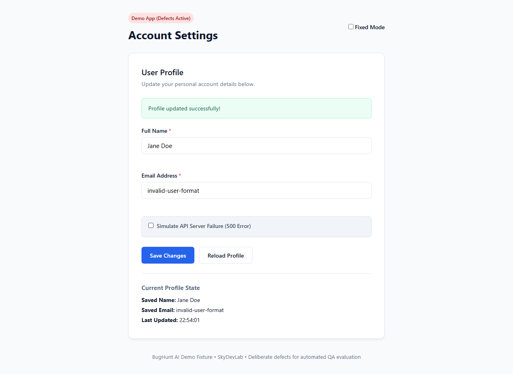
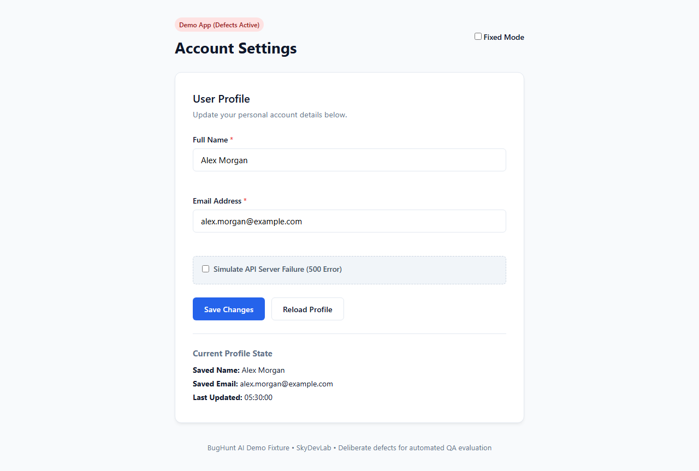
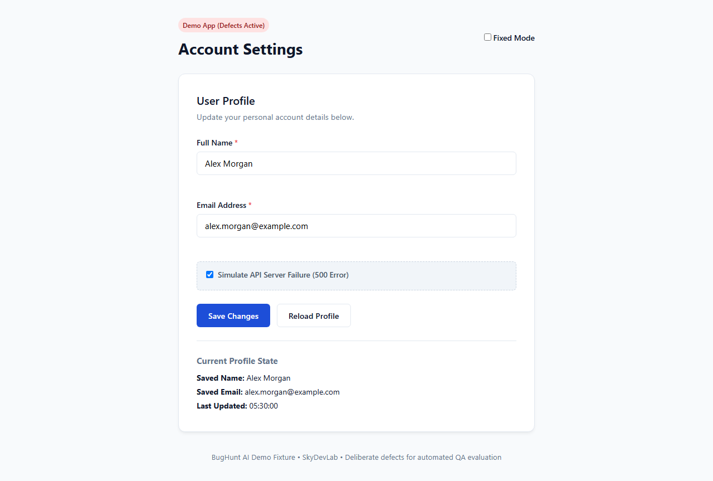

Paste a Jira or Azure DevOps ticket into Google Antigravity. BugHunt AI analyzes acceptance criteria, drives Playwright browser exploration, captures screenshot evidence, reproduces failures, and delivers actionable Markdown defect reports.
The 6-Stage Autonomous QA Lifecycle
Zero manual test scripts required for standard acceptance criteria validation.
Ingests raw tickets from Jira, Azure DevOps, Markdown files, or chat prompts. Extracts acceptance criteria, URLs, environment details, and domain entities.
Formulates deterministic test matrices covering positive acceptance, malformed negative inputs, required boundaries, refresh persistence, and HTTP 500 resilience.
Spins up headless Chromium. Discovers accessible roles and stable selectors. Strictly constrained within the user-authorized origin scope via ScopeGuard.
Whenever an assertion fails, captures full-page screenshot artifacts before resetting state. Records sanitized console logs and failed network traces.
Executes 2 additional re-runs on failing scenarios. Deterministically classifies outcomes into Confirmed (100% reproducible) or Suspected (flaky race).
Outputs self-contained Markdown defect reports and structured JSON summaries with numbered reproduction steps and embedded relative screenshot links.
See BugHunt AI in Action
Experience how the agent analyzes a ticket and identifies real defects against a live profile form.
Title: User profile update Description: Users can update name and email in Settings. Acceptance criteria: • Valid changes are saved. • Invalid emails are rejected. • Changes persist after refreshing. • API failures display an appropriate error. Target URL: http://localhost:3000 Environment: local development
// Click "Simulate BugHunt Execution" to watch Playwright explore, assert, and generate evidence...
Screenshot Artifacts Captured Live
Captured automatically at the exact moment of Playwright assertion failure before browser state reset.
Input `"invalid-user-format"` accepted with success alert rather than throwing a validation error.

Saved profile updates revert to initial values immediately after browser page reload.

HTTP 500 error logged to console without surfacing a visible error banner to the user.

Installation Guide
Install BugHunt AI into your Antigravity environment in under 60 seconds.
Run the standard Antigravity CLI plugin installer directly against the public GitHub repository:
agy plugin install https://github.com/SkyDevLab/BugHuntStrictly locked to the user-authorized origin URL. Any cross-domain redirects or external probes are halted immediately.
Never invents or simulates tests or logs. If a service is offline, scenarios are marked as Blocked rather than false bugs.
Bearer tokens, passwords, and JWTs are automatically stripped (`[REDACTED]`) from logs, reports, and screenshots.